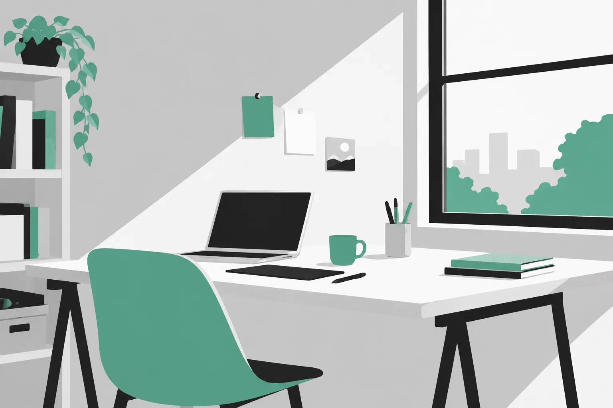
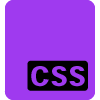
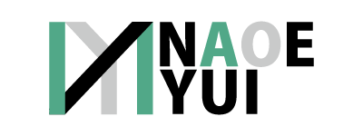

直枝 悠衣
| 生年月日 | 2000/02/23 | 血液型 | Ｏ型 |
|---|---|---|---|
| 趣味 | ゲーム、映画館で映画を見ること | ||
UIやLive2Dにも興味がある。
ゲームのメニュー画面を見るのが好きで デザインやレイアウトについて学ぼうと思った。

製作時間25時間
マーメイドコアをコンセプト
text-alignとmargin-inlineの違い、display
blockの使い道などcssについて理解を深めた。

ポートフォリオのデザイン（544kb 約2.5時間）使用ソフト illustrator
名刺とデザインを統一。
名刺（77kb 約3時間） 使用ソフトillustrator
初のillustratorでの作品。シンプルに見やすさを追求したもの。ロゴの作成も行ったきっかけ。
四角いブロックをイメージして作った。
Pearl Tideのフライヤー（2081kb 約10時間）
情報の整理、素材の作成や収集など作業の整理に時間がかかった。
3枚目の整列したものの方がやはり見やすいと感じた。
飲食店のバナー（472kb 約5時間）
画像を2枚使うとレイアウトが変わって調整が難しかった。
転職のバナー（722kb 約9時間）
illustratorとPhotoshopの使い方の違いが分かった。
意外と文字を大きく見せるレイアウトって難しいなと感じた。
喫茶 黄昏堂のデザイン-figma-（8577kb 約6時間）
このまま使うと文字の配置や横幅など気になるところがでてきたので修正しながらWEBサイトを作成中。